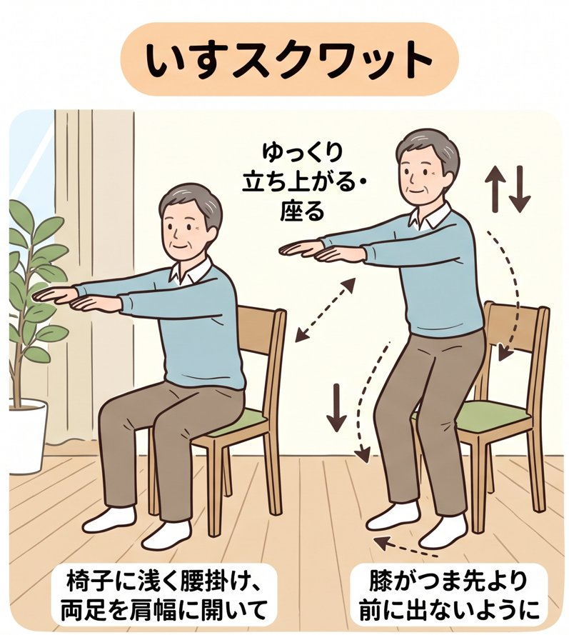

声で数えるので、画面を見ずに運動できます。家族それぞれ、年代に合わせたメニューを選べます。
記録はこの端末に保存しています。電波がなくても使えます。
年齢より、いまの体力に合わせて選んでかまいません。
時間を選ぶと、えらんだメニューの種目を順番に、決まった秒数ずつ行います。
一度にまとめてやるより、1日の中で分けて、こまめに動くほうが続けやすく効果的です。①基本と②おなかは別々にやってもポイントは同じです（それぞれ半分ずつ）。
| 時間帯 | やること | ねらい |
|---|---|---|
| 朝起きて30分〜1時間後 | ② おなか | 体を目覚めさせる。軽めで安全 |
| 昼食後〜夕方 | ① 基本 | 筋トレの本番。体が一番よく動く時間帯 |
| 夕食後30分ごろ | その場もも上げ1〜2分、または10分の散歩 | 食後の血糖値の上がりすぎを抑える。おなか周りの対策に |
| 寝る前 | 軽いストレッチだけ | 激しい運動は寝つきを悪くする |
出典：厚生労働省「健康づくりのための身体活動・運動ガイド2023」
Googleドライブを保管庫にして、同じ合言葉の端末どうしで記録を自動で合わせます。家族で同じ合言葉を使えば、家族全員の記録を共有できます。
合言葉を知っている人は、この記録を見ることができます。家族以外には教えないでください。
記録はこの端末の中に保存されています。別の端末（PC⇔スマホ）へ移すときや、念のための控えに使います。
読み込むと、この端末の記録はファイルの内容に置きかわります。
痛み・めまい・息苦しさを感じたら、すぐに中止してください。回数より「毎日少しずつ」が大切です。
体力年齢の判定基準：中谷敏昭ら「30秒椅子立ち上がりテスト（CS-30テスト）成績の加齢変化と標準値の作成」臨床スポーツ医学 20(3), 2003／文部科学省「体力・運動能力調査」年齢別平均値（上体起こし）。判定は目安で、医学的な診断ではありません。持病のある方は、運動を始める前に医師に相談してください。
| 版 | 日付 | おもな変更 |
|---|---|---|
| 3.1 | 11/15 | 運動の最後にクールダウン（内もも・太もも前・太もも裏・ふくらはぎのストレッチ）を自動で付ける。つけない設定も可 |
| 3.0 | 11/15 | 体力測定の「30秒椅子立ち上がり」「30秒上体起こし」をカメラで数えられるように |
| 2.9 | 11/15 | カメラで「ジャンピングジャック／ステップジャック」も数えられるように。起動後の待ち時間を10秒に |
| 2.8 | 11/15 | カメラで「腕立て」（壁・椅子・ひざつき・腕立て伏せ）も数えられるように |
| 2.7 | 11/15 | カメラ：回数の読み上げが途中で消えないように修正。もも上げで両足を同時に数えないように修正 |
| 2.6 | 11/15 | カメラで「もも上げ（座って・立って）」も数えられるように。左右それぞれの回数も表示 |
| 2.5 | 11/15 | カメラ：起動してから位置につくまで6秒待つ。立った位置の基準を直近4秒の高さから決め、しゃがんだまま6秒たったら取り直す（1.5m以上離れると数えなかった不具合を修正）。下がり具合の数値を画面に表示 |
| 2.4 | 11/15 | カメラ：距離や姿勢に関係なく、いつも肩の高さで判定するように統一（全身⇔上半身の切りかえをなくした） |
| 2.3 | 11/15 | カメラ：上半身のときは常に肩の高さで判定し、立つ・座るで判定方法が切りかわらないように修正 |
| 2.2 | 11/15 | カメラの数えすぎを改善（ぶれの除去と間隔のチェック）。全身が映らなくても、腰から上・肩から上で数える。－1／＋1 で回数を直せる |
| 2.1 | 11/15 | カメラでスクワットを自動で数える（試験版）。座って足伸ばし・椅子腕立てのイラスト |
| 2.0 | 11/15 | 電話などで画面がかくれたら自動で一時停止し「続きから再開」。途中でやめても実施分を記録。過去の消費カロリーを記録時の値で固定。「この種目を飛ばす」ボタン。④ 椅子中心・⑤ ジャンプなしメニュー |
| 1.9 | 11/15 | 休憩中と種目が変わる前の準備で、「次のプログラムは ○○、14回（左右交互）×2セットです」と声と画面で案内 |
| 1.8 | 11/13 | 性別を「女性」にした人に、ひざつき腕立て・かかと落とし・骨盤底筋トレを自動で追加 |
| 1.7 | 11/13 | ③ 立ったまま（外出先）メニュー、3・5・7・10分の時間指定メニュー |
| 1.6 | 11/13 | 体重の記録とグラフ、週1回のお知らせ |
| 1.5 | 11/13 | 消費カロリーの表示とグラフ、食べてよい目安 |
| 1.4 | 11/13 | みんなで同時に運動、ゲスト登録、ポイント順位表、プロフィールとグラフ。同期で名前が戻る不具合を修正 |
| 1.3 | 11/13 | Google ドライブを使ったスマホ・PCの自動同期 |
| 1.2 | 11/13 | 効果的な1日の使い方と、時間帯に合わせたひとこと |
| 1.1 | 11/13 | サボった日のマイナスポイント |
| 1.0 | 11/13 | GitHub で公開。電波がなくても使える。記録のバックアップ |
画面のバージョンが新しくならないときは、電波のあるところで開き直してください。

電話などで画面がかくれたので、一時停止しました。
映像はこの端末の中だけで処理し、どこにも送りません。最初の1回は、画像を見分ける仕組み（約10MB）を読み込むため、インターネットが必要です。
準備中…
数えすぎるときは、しゃがむ深さを1段深くしてください。